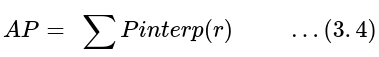
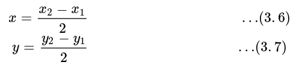

Colonoscopy
Colorectal cancer,
also called CRC, is a significant public health problem in many countries.
With a total of 1.096.601 new cases diagnosed worldwide and more than half ended in death during 2018
caused CRC the fourth leading cause of cancer deaths [1]. The higher risk of developing colon cancer is for
people over 50 years old and those who have had a previous colon cancer incidence in their family. The growth of
glandular tissue in the colon mucosa, also known as an adenomatous polyp, causes most colon cancer instances. Mostly
the polyps initially benign. Some of these will become malignant over time, eventually leading to death if not detected
and treated appropriately.
This study explores a state-of-the-art review of the current semi-automatic computational approaches for increasing the polyp's
detection rate, estimating their polyp size, aiming to reduce the subjectivity while exploring the gastrointestinal tract. The method
uses the fisheye camera or wide-angle camera and processes it to generate a panoramic view to create a better perspective on the colonoscopy
image and close to the common human visual perception.
The applied method of this study adapts Mask R-CNN [2], which will be used as a lumen
detector in the colon image, where it has shown considerable progress accuracy in object detection and instance segmentation. The lumen detection
will return the center coordinate of the lumen on the colon image.
Library used
This session will explain in detail about the library used.
a. Moildev
Moildev Library is a collection of functions used to develop fisheye image applications.
This library was developed by The MOIL Laboratory in Ming Chi University of Technology, Taiwan, under the guidance of professor Chuang-Jan Chang. Originally this
library writes in C++ to take advantage of the computational speed provided by this programming language. Moildev library has several functions, such as Anypoint mode-1,
Anypoint mode-2, and Panorama. Each function has its parameter and control by given zenithal angle and azimuthal angle to reach a specific region of interest.
b. Mask R-CNN
OpenCV stands for Open-Source Computer Vision Library. It is a free and
The Mask R-CNN acts as a deep neural network and functions as a problem solver the instance segmentation in machine learning or computer vision. The instance segmentation is the task of detecting an
object of interest in pixel-level that appearing in an image [7]. The instance segmentation model creates pixel-wise masks for objects in the image and provides a much more detailed understanding of
the objects in the image. The Mask R-CNN technique originally is Faster R-CNN, then modified by adding another branch to predict masks for each RoI on the image. This additional branch is parallel to
the existing branch for classification and bounding box regression, as shown on the Mask R-CNN method's framework in Figure 2.10. Two trainable subnetworks follow the Mask R-CNN method. The first network
is a Region Proposal Network (RPN) used to generate object proposals, and the second network will classify the proposal to produce a bounding box and a binary mask for each object proposal or called the RoI.

In the main result, Mask R-CNN performs a thorough comparison with state of the art and
comprehensive ablations on the COCO dataset. Table 2 compares Mask R-CNN result to the state of the art method the instance segmentation using the coco dataset. Mask R-CNN model outperforms baseline variants of
all instantiations of the previous state-of-the-art models. In the table below, the winners of the COCO 2015 and 2016 segmentation challenges that include MNC and FCIS.
The Mask R-CNN with the backbone using ResNet-101-FPN also outperformed the base variant of all previous advanced models for object detection,
including the single model variant G-RMI, the winner of the 2016 COCO Detection Challenge as shown in Table 3.
Purpose of research
The lumen is the inside space of a tubular biologic structure, such as the gastrointestinal tract of the human anatomy system and observation of the colonoscopy procedure carried out along the colon lumen. The lumen's center
point is a reference point for reconstructing the original image's optical point as input to generate suitable panoramic view. R-CNN had provided the transfer learning model from the coco dataset and retrains this model using our own dataset.
A dataset is a collection of data used during deep learning development. It consists of three different datasets: a training set, a validation set, and a test set.
Implementation
A. Create Mask R-CNN model for lumen center detection
This research aims to study the application of fisheye camera technology in colonoscopy devices and process the image to generate a better perspective
image as a reference in detecting polyp and estimate their size during the colonoscopy procedure.

For the Mask R-CNN dataset, we have to annotate all the datasets. We annotate the lumen or hole in the colon image using the VGG annotator [4].
Figure 3.7 Showing the process to create a dataset from the video until getting the JSON file containing the image's information.

ResNet101 is the backbone structure used for the Mask R-CNN model that serves as a feature detector. The objectives of the object detection model are classification and localization.
We can evaluate the object detection model using the intersection over union (IoU) between the ground truth and the prediction bounding box. Figure 3.8 showing the IoU of the ground truth and the prediction bounding box.

The overlap ratio IoU between the ground truth bounding box (
Bgt) and the predicted bounding box (
Bp) must exceed 0.5 (50%). This value will be used as the threshold for considered correct detection. The equation to calculate the score of IoU following:
Where
Bp ∩ Bgt represents the intersection of the predicted and ground truth bounding boxes, while
Bp ∪ Bgt
is their union. The true positive category of object detection is if the score IoU reaches ≥
0.5, whereas the IoU score < 0.5 is a false detection and classify as False Positive (FP). When the
model failed to detect an object in the image, it is a False Negative (FN). The part of the image where did not predict
an object stands for True Negative (TN). Following the rule, calculate the Precision and Recall as the metric to evaluate
the performance using the equation:
The precision-recall curve will evaluate the detector's performance. However,
to compare different detectors when the curves intersect is not easy. Therefore, the calculation of the area under the interpolated precision-recall
curve can be used as a solution commonly known as the AP, which can be calculated by the following formula:

Where
Pinterp
is a method for reducing the wiggles' impact in a curve precision vs. recall. The highest precision found for any recall level
r′≥r
, is the interpolated precision
Pinterp
at a certain recall level
r
that can be calculated by the equation:
fter evaluating the model, then use it to predict the lumen center
in the colon image. In this research, the coordinate of lumen center is the destination result. To get the center of the lumen colon, we use a
bounding box from the prediction results. The bounding box generated by Mask R-CNN is expressed by
(x1, y1, x2, y2)
where
x1, y1
is the first point, and
x2, y2
is the second point to create the rectangle. The midpoint of the rectangle is the center coordinate of the prediction lumen colon, which can be calculated by the equations:

B. Panoramic view
The camera has a wide-angle FOVs lens is an ideal candidate for generating the panoramic view. The panoramic
view may present a horizontal view in a specific immersed environment to meet the common human visual perception. In generating a panoramic view from a fisheye camera, the intensity
of the imaged point (u,v) is mapped to the small sphere and coded as (α,β) as displayed in Figure 3.12. A gnomonic cylinder projection will project a part of the global image onto the
cylinder surface based on a cartographic projection. The radial image segment on the hemisphere will be displayed as straight lines if the cylindrical surface is tangent to the equator.
A panoramic view is accomplished by unfolding the cylindrical projection surface into a rectangular plane.
C. User interface design
The design of user interface can be seen on the figure bellow this.

Result
From the training phase, the comparison between the Loss training and validation for every epoch is displayed on
learning curve that can be seen in Figure 4.1. A loss function quantifies how good or bad a given predictor is at classifying the input data in a dataset. The smaller the loss, the better a
job the classifier is at modeling the relationship between the input data and the output targets. In Mask R-CNN the loss function is obtained from the combination of the loss of classification,
localization, and segmentation Mask. Following the learning curve for training loss, it showing improvement and similarly with a learning curve for validation loss that has improvement, but a large
gap remains between both curves. This shows that the dataset has problems, the training dataset does not provide sufficient information to learn the problem very precisely. It also occurs when the training
dataset has too few instances compared to the validation dataset.

From the training results, we can select the best model obtained. The best model is the lowest score of loss from the history of the
training phase will be saved into Hierarchical Data Format (HDF) 5 files, which include model weight, model architecture, model compilation details (loss & metrics), and model optimizer state where has Extension (.h5)

As described in section 3.4, a panoramic view is achieved by unfolding the cylindrical projection surface into a rectangular plane to meet the common human visual perception.
The image with tshe position optical axis not in the center lumen will produce a poor panoramic view.

We have to improve the input image by re-centering the optical axis on the original image to the center of the lumen. Additionally, the center of the lumen is obtained
from the prediction using the Mask R-CNN method.

The picture bellow shows some example results in generating a panoramic view from the original image, the panoramic view before transforming the optical axis image, center detection,
re-center image, and the result of the ideal panoramic view


Conclusion
This project aims to process the colonoscopy image to increase the polyp's detection rate, estimate their polyp size, and reduce the subjectivity
while exploring the gastrointestinal tract. We proposed a new method called a panoramic view for displaying a colonoscopy image. A panoramic view is achieved by unfolding a cylindrical projection surface into a rectangular plane.
To get an ideal panoramic view from a colonoscopy image, we have to put the optical axis camera in the lumen colon center. Thus, the reconstruction of the optical axis of the image is essential. All operations use the Moildev library, which is a native library developed in the MOIL lab.
To reconstruct the optical axis image in the lumen center colon, we have to detect the lumen colon and return the center coordinates. We adopt the Mask R-CNN object detection technology connected to Resnet101 as the backbone. This model generating AP score with a threshold value 0.5 is 0.82(82%),
a threshold 0.75 is 0.65 (65%), and a threshold > 0.9 is 0.23(23%). This model is sufficient to predict the central lumen coordinates as a reference for reconstructing the optical axis of an image.
The proposed method has shown promising results by offering a colon image in a rectangular plane and close to common human visual perception makes it easier to detect the polyps and correctly estimate their size. This result can display the object's size with a similar perspective as the original
without being affected by the distortion and the object's distance to the camera.
You can be running this project through MoilApp plugin apps call colonoscopy, before you run you have to setting the environment needed. You can download or clone MoilApp form this GitHub repository https://github.com/MoilOrg/MoilApp